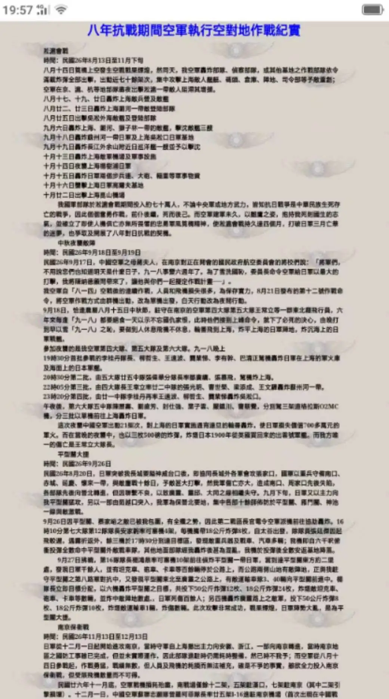

八年抗战，中国牺牲的空军一共1468名，苏联236名，美国牺牲的人数，前些日子刚刚首次公布，2590名。
南京抗日航空烈士纪念馆，最近出了一回名。这座由国民政府始建于上世纪三十年代的航空烈士陵园，一直以来，都是一座国家级的大型纪念园区，本该早就广为人知才对。
台湾忠烈祠，是另一处纪念抗日航空烈士的地方。今天我就发表一段从网上找来的资料，来源就是台湾忠烈祠，以此纪念我们李家的抗日航空英烈李有幹。

八年抗战期间空军执行空对地作战纪实之 淞沪会战
时间: 民国26年8月13日至11月下旬 八月十四日，笕桥上空发生空战，战果辉煌。同天，我空军轰炸部队、侦察部队，或其他基地之作战部队，依令满载炸弹全部出击，出动近七十余架次，集中攻击上海敌人舰艇、码头、仓库、阵地、司令部等，予敌重创。空军在京、沪、杭等地部队，尽夜出击淞沪一带敌人，阻滞其增援。 八月十七、十九、廿日，轰炸上海敌兵营及敌舰。八月廿二、廿三日，轰炸上海浏河一带敌登陆部队。八月廿五日，出击吴淞外海敌舰及登陆部队。九月六日，轰炸上海、浏河、狮子林一带的敌舰，击沈敌舰三艘。九月十八日轰炸苏州河一带日军及上海吴淞口日军基地。九月十九日轰炸长江外佘山附近日巡洋舰一艘，并予以击沉。十月十三日轰炸上海敌军机场及军事设施。十月十四日夜袭上海杨树浦日军。十月十五日轰炸日军两个步兵连、大炮、辎重等军事物资。十月十六日，袭击上海日军高尔夫基地。十月廿二日，出击上海昆山机场。 我国军部队于淞沪会战期间，投入约七十万人，不论中央军或地方武力，皆知抗日战争是中华民族生死存亡的战争，因此个个奋勇作战，前仆后继，死而后己。而空军建军未久，以雏鹰之姿，抱持我死则国生的志气，并确立了即使人机俱亡亦无所畏惧的忠勇军风，笕桥精神。使淞沪会战持久达四个月，打破日军三月亡华的迷梦，也争取及开展了八年对日抗战的契机。
中秋夜袭敌阵
时间：民国26年9月18日至9月19日 民国26年9月17日，中国空军之母蒋夫人，在南京对正在开会的国民政府航空委员会的将校们说："将军们，不用说您们也知道明天是什么日子，九一八事变六周年了。为了雪洗国耻，委员长命令空军给日军以最大的打击，我将陈纳德顾间带来了，让他与你们一起拟定作战计划。……" 我空军自"八一四"空战后的连续作战，人员和飞机损失很多。为保存实力，8月21日发布的第十二号作战命令，将空军作战方式由群机出动，改为单机出发，白天行动改为夜间行动。 9月18日，恰逢农历八月十五日中秋节。驻守在南京的空军第四大队第五大队王常立等一群东北藉飞行员，六年来每逢"九一八"都要绝食一天以示不忘国仇家恨，此时他们接到上峰命令，就下了必死的决心，由晚打到早，以雪"九一八"之耻，要做到人休息飞机不休息，轮番飞到上海，炸平上海的日军阵地，炸沉海上的日军战舰。 参加夜袭的是我空军第四大队、第五大队及第六大队。九月十八日晚上19时30分，首批参战的李桂丹队长、柳哲生、王远波、龚业悌、李有幹、巴清正驾机轰炸日军在上海的军火库及海面上的日本军舰。20时30分第二批，由五大队廿五中队张伟华分队长率邹赓续、张慕飞，驾机炸上海。22时05分第三批，由四大队长王常立率廿二中队的张光明、曹世荣、梁添成、王文骅轰炸苏州河一带。23时20分第四批，由廿一中队李桂丹再率王远波、柳哲生、龚业悌轰炸吴淞口。午夜后，第六大队五中队陈历寿、刘盛芳、封仕强、叶子云、严镇川、曹朝觉，分别驾三架道格拉斯O2MC机，分三批以单机前往上海轰炸日军。 这次夜袭中国空军出动21架次，对上海的日军实施通宵达旦的轮番轰炸，使日军损失价值700多万元的军火。而在当晚的夜袭中，也以三枚500磅的炸弹，炸煅日本1900年从英国买回来的出云号军舰。而我方唯一的伤亡是王常立大队长。
鸽豹君说：上面这段文字，是目前仅有的关于李有幹参与具体战斗的时间和地点的记录。为了方便阅读，我做了一些标点符号的调整，并将繁体字改成了简体字。文章的内容，没有改动，包括明确的错误，也没有改动。文章里说只有王常立大队长牺牲了，实际上还有他人牺牲，比如李有幹也牺牲了。文章里还说"东北籍飞行员"，似乎也包括李有幹。我爷爷到南京，本来要去空军基地探望他弟弟，结果刚好传来噩号。报信的人也是说"东北人李有幹牺牲了"。我爷爷在回忆录中说"佣人称他们但问何人探询其人，队中已有通知寄往其家属，遂转身告我，其人是东北人，是先生何人？我答其人是我兄弟，北平口音被他们误认作东北人了"。李有幹生在北京，长在北京，说话北京口音，被南方人误以为他是东北人。
这篇文章还有一个缺憾，在"中秋夜袭敌阵"前的几次空军出击中，没有稍微详细具体的记录，不知道李有幹还参加过那几次战斗。不过，以国民党空军当时捉襟见肘的情形来看，李有幹恐怕是参加了大部分出击行动，那时候太缺飞行员了。
明天的九月十八日，谨以此文纪念我们李家的抗日航空英烈李有幹。